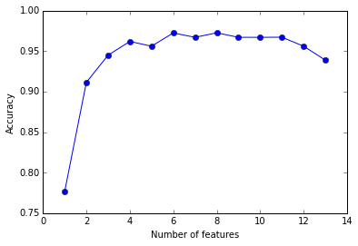

mlxtend
Sebastian Raschka, last updated: 05/14/2015
Sequential Backward Selection
from mlxtend.sklearn import SBS
Sequential Backward Selection (SBS) is a classic feature selection algorithm -- a greedy search algorithm -- that has been developed as a suboptimal solution to the computationally often not feasible exhaustive search. In a nutshell, SBS removes one feature at the time based on the classifier performance until a feature subset of the desired size k is reached.
Note that SBS is different from the recursive feature elimination (RFE) that is implemented in scikit-learn. RFE sequentially removes features based on the feature weights whereas SBS removes features based on the model performance. More detailed explanations about the algorithms and examples can be found in this IPython notebook.
Example
Input:
from mlxtend.sklearn import SBS
from sklearn.neighbors import KNeighborsClassifier
from sklearn.datasets import load_iris
iris = load_iris()
X = iris.data
y = iris.target
knn = KNeighborsClassifier(n_neighbors=4)
sbs = SBS(knn, k_features=2, scoring='accuracy', cv=5)
sbs.fit(X, y)
print('Indices of selected features:', sbs.indices_)
print('CV score of selected subset:', sbs.k_score_)
print('New feature subset:')
sbs.transform(X)[0:5]
Output:
Indices of selected features: (0, 3)
CV score of selected subset: 0.96
New feature subset:
array([[ 5.1, 0.2],
[ 4.9, 0.2],
[ 4.7, 0.2],
[ 4.6, 0.2],
[ 5. , 0.2]])
As demonstrated below, the SBS algorithm can be a useful alternative to dimensionality reduction techniques to reduce overfitting and where the original features need to be preserved:
import matplotlib.pyplot as plt
from sklearn.preprocessing import StandardScaler
scr = StandardScaler()
X_std = scr.fit_transform(X)
knn = KNeighborsClassifier(n_neighbors=4)
# selecting features
sbs = SBS(knn, k_features=1, scoring='accuracy', cv=5)
sbs.fit(X_std, y)
# plotting performance of feature subsets
k_feat = [len(k) for k in sbs.subsets_]
plt.plot(k_feat, sbs.scores_, marker='o')
plt.ylabel('Accuracy')
plt.xlabel('Number of features')
plt.show()

More examples -- including how to use
SBS in scikit-learn's GridSearch can be found in this IPython notebook.
Default Parameters
class SBS(BaseEstimator, MetaEstimatorMixin):
""" Sequential Backward Selection for feature selection.
Parameters
----------
clfs : scikit-learn estimator object
k_features : int
Number of features to select where k_features.
scoring : str, (default='accuracy')
Scoring metric for the cross validation scorer.
cv : int (default: 5)
Number of folds in StratifiedKFold.
n_jobs : int (default: 1)
The number of CPUs to use for cross validation. -1 means 'all CPUs'.
Attributes
----------
indices_ : array-like, shape = [n_predictions]
Indices of the selected subsets.
k_score_ : float
Cross validation mean scores of the selected subset
subsets_ : list of tuples
Indices of the sequentially selected subsets.
scores_ : list
Cross validation mean scores of the sequentially selected subsets.
Examples
--------
>>> from sklearn.neighbors import KNeighborsClassifier
>>> from sklearn.datasets import load_iris
>>> iris = load_iris()
>>> X = iris.data
>>> y = iris.target
>>> knn = KNeighborsClassifier(n_neighbors=4)
>>> sbs = SBS(knn, k_features=2, scoring='accuracy', cv=5)
>>> sbs = sbs.fit(X, y)
>>> sbs.indices_
(0, 3)
>>> sbs.k_score_
0.96
>>> sbs.transform(X)
array([[ 5.1, 0.2],
[ 4.9, 0.2],
[ 4.7, 0.2],
[ 4.6, 0.2],
[ 5. , 0.2]])
"""